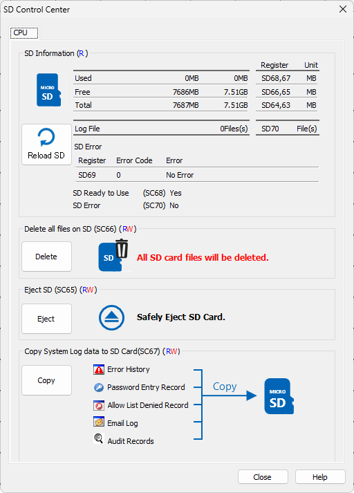
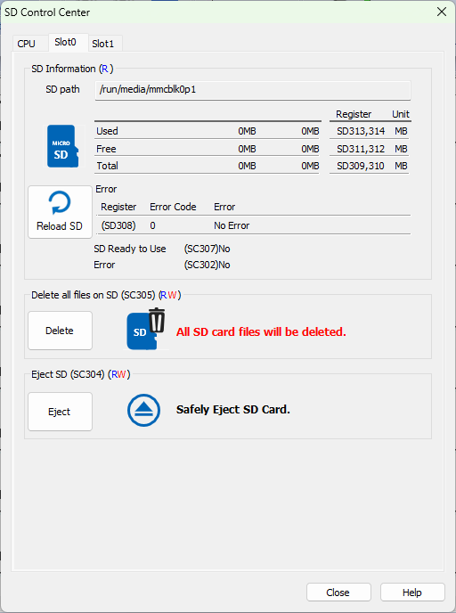

Topic: CL284

| SD Control Center |
Topic: CL284
|
The SD Control Centerprovides tools for managing your microSD card. When connected to the PLC, you can use this tool to see the SD card memory usage, delete all files, safely eject the SD card, copy System Errors, Password Entry Errors, Allow List Denied Records, Email Log, and Audit Records. Data logging to the SD card is configured in Data Logging Setup.

Tab Selector: At the top of the window are tabs to select which of the SD card slots to control.
Used Space: The used space on the microSD card is shown here, and available in registers CPU (SD68 and SD67), Slot 0 (SD313 and SD314), or Slot 1 (SD413 and SD414).
Free Space: The available free space on the microSD card is shown here, and available in registers SD66 and SD65, Slot 0 (SD311 and SD312), or Slot 1 (SD411 and SD412).
Total Space: The total capacity of the microSD card is shown here, and available in registers SD64 and SD63, Slot 0 (SD309 and SD310), or Slot 1 (SD409 and SD410).
Log File: The number of log files stored on the CPU's microSD card is shown here, and available in register SD70. The maximum is 999.
SD Ready to Use: The ready status of the microSD card is shown here, and available in register SC68.
SD Error: The error status of the microSD card is shown here, and available in register SC70. If an error has occurred, the error code is displayed here and stored in register SD69.
Reload SD: Click the circular arrow to reload the microSD card. This will refresh the information in the SD Control Center window.
Delete all files on SD: All files can be deleted by clicking the Delete button, or writing a '1' to register SC66. This will delete all files in the CLICK_PLUS folder on the SD Card, not just the log files.
Eject SD: Click the Eject button or write a '1' to register SC65 to safely eject the microSD card from the CPU. SC304 to eject from the slot0 intelligent module, or SC324 to eject from the slot 1 intelligent module. This should be done before physically ejecting the SD Card from the PLC to prevent Data Loss or damage to the microSD card.
Copy System Log data to SD Card: System Log Data resides in the RAM memory of the PLC. To prevent it from being lost, make sure you have a battery installed in the PLC and copy the files often to the microSD Card.
The current System Records can be copied to the microSD card by clicking theCopybutton or writing a '1' to register SC67.
|
|
Note: Any existing Records stored on the microSD card will be replaced. |
|
Error History, Failed Password Attempts Record, Allow List Denied Records, Email Log, and Audit Records can be found along with the Data Logs in the following locations on the SD Card after a Copy is executed:
| File Locations on SD Card | |
| Log | Path/Filename |
| Error History | \CLICK_PLUS\ERR_HISTORY\ERR_HISTORY.CSV |
| Failed Password Attempts | \CLICK_PLUS\PW_ENTRY\PW_ENTRY.CSV |
| Data Logs | \CLICK_PLUS\LOG\LOG_YYYYMMDD_HHMM.CSV |
| Allow List Denied Records | \CLICK_PLUS\REJECT_RECORD\PORT1.CSV |
| \CLICK_PLUS\REJECT_RECORD\WLAN.CSV | |
| Email Log | \CLICK_PLUS\EMAIL\EMAIL_LOG.TXT |
| Audit Records | \CLICK_PLUS\AUDIT_RECORDS\AUDIT_RECORDS.CSV |

Each of the Intelligent modules also has an SD card with a control window for those SD cards. At the top of the window there is a Path to the card. Node-RED uses this path in file operations to read and write to the card. This is also where the SQLite Database should be stored.
SC305 and SC325 to delete all information from the SD card are not implemented in CLICK Software version 3.70.
CLICK PLUS Email Log
Failed Password Attempt Record
Allow List Setup
Error History
Audit Records